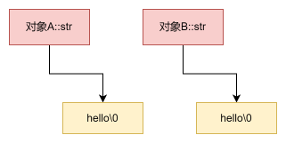
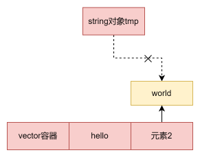

一、auto & decltype 1.1 auto auto：让编译器在编译器就推导出变量的类型，可以通过=右边的类型推导出变量的类型。
1 2 3 4 5 6 auto a = 10 ; int i = 10 ;auto b = i; auto d = 2.0 ;
auto 推导规则：
auto 的使用必须马上初始化，否则无法推导出类型
auto 在一行定义多个变量时，各个变量的推导不能产生二义性，否则编译失败
auto 不能用作函数参数
在类中 auto 不能用作非静态成员变量
auto 不能定义数组，可以定义指针
auto 无法推导出模板参数
在不声明为引用或指针时，auto 会忽略等号右边的引用类型和 const、volatile 限定
在声明为引用或者指针时，auto 会保留等号右边的引用和 const、volatile 属性
1 2 3 4 5 6 7 8 9 10 int i = 0 ;auto *a = &i; auto &b = i; auto c = b; const auto d = i; auto e = d; const auto & f = e; auto &g = f;
1.2 decltype 上面介绍的 auto 用于推导变量类型，而 decltype 则用于推导表达式类型，这里只用于编译器分析表达式的类型，表达式实际不会进行运算。
1 2 3 4 5 6 int func () return 0 ; }decltype (func ()) i; int x = 0 ;decltype (x) y; decltype (x + y) z;
decltype 不会像 auto 一样忽略引用和 const、volatile 属性，decltype 会保留表达式的引用和 const volatile 属性
推导规则：对于 decltype(exp) 有
exp 是表达式，decltype(exp) 和 exp 类型相同
exp 是函数调用，decltype(exp) 和函数返回值类型相同
其它情况，若 exp 是左值，decltype(exp) 是 exp 类型的左值引用
1.3 auto 和 decltype 配合使用 auto 和 decltype 一般配合使用在推导函数返回值的类型问题上。
下面看一段代码：
1 2 3 4 template <typename T, typename U>return_value add (T t, U u) { return t + u;
如果这样像下面这样使用 decltype 就会报错， 因为在 decltype(t +u) 推导时，t和u尚未定义，就会编译出错 ：
1 2 3 4 template <typename T, typename U>decltype (t + u) add (T t, U u) return t + u;
解决办法如下：
C++11 有一个叫做返回类型后置（trailing return type）的语法
1 2 3 4 template <typename T, typename U>auto add (T t, U u) -> decltype (t + u) return t + u;
返回值后置类型语法就是为了解决函数返回制类型依赖于参数但却难以确定返回值类型的问题。
在 C++ 14 后变得更简洁了：
1 2 3 4 5 6 7 8 9 10 template <typename T, typename U>decltype (auto ) add (T t, U u) return t + u;template <typename T, typename U>auto add (T t, U u) return t + u;
二、lambda 表达式 2.1 基本格式 Lambda 表达式是一种在被调用的位置或作为参数传递给函数的位置定义匿名函数对象（闭包 ）的简便方法。Lambda 表达式的基本语法如下：
1 [capture list] (parameter list) -> return type { function body }
capture list 是捕获列表，用于指定 Lambda 表达式可以访问的外部变量，以及是按值还是按引用的方式访问。捕获列表可以为空，表示不访问任何外部变量，也可以使用默认捕获模式 & 或 = 来表示按引用或按值捕获所有外部变量，还可以混合使用具体的变量名和默认捕获模式来指定不同的捕获方式parameter list 是参数列表，用于表示 Lambda表达式的参数，可以为空，表示没有参数，也可以和普通函数一样指定参数的类型和名称，还可以在 c++14 中使用 auto 关键字来实现泛型参数return type 是返回值类型，用于指定 Lambda表达式的返回值类型，可以省略，表示由编译器根据函数体推导，也可以使用 -> 符号显式指定，还可以在 c++14 中使用 auto 关键字来实现泛型返回值function body 是函数体，用于表示 Lambda表达式的具体逻辑，可以是一条语句，也可以是多条语句，还可以在 c++14 中使用 constexpr 来实现编译期计算
2.2 捕获方式 2.2.1 值捕获 在捕获列表中使用变量名，表示将该变量的值拷贝到 Lambda 表达式中，作为一个数据成员。值捕获的变量在 Lambda 表达式定义时就已经确定，不会随着外部变量的变化而变化。值捕获的变量默认不能在 Lambda 表达式中修改，除非使用 mutable 关键字。
1 2 3 4 int x = 10 ;auto f = [x] (int y) -> int { return x + y; }; 20 ; f (5 ) << endl;
2.2.2 引用捕获 在捕获列表中使用 & 加变量名，表示将该变量的引用传递到 Lambda 表达式中，作为一个数据成员。引用捕获的变量在 Lambda 表达式调用时才确定，会随着外部变量的变化而变化。引用捕获的变量可以在 Lambda 表达式中修改，但要注意生命周期的问题，避免悬空引用的出现。
1 2 3 4 int x = 10 ;auto f = [&x] (int y) -> int { return x + y; }; 20 ; f (5 ) << endl;
2.2.3 隐式捕获 在捕获列表中使用 = 或 &，表示按值或按引用捕获 Lambda 表达式中使用的所有外部变量。这种方式可以简化捕获列表的书写，避免过长或遗漏。隐式捕获可以和显式捕获混合使用，但不能和同类型的显式捕获一起使用。
1 2 3 4 5 6 int x = 10 ;int y = 20 ;auto f = [=, &y] (int z) -> int { return x + y + z; }; 30 ; 40 ; f (5 ) << endl;
2.2.4 初始化捕获 C++14 引入的一种新的捕获方式，它允许在捕获列表中使用初始化表达式，从而在捕获列表中创建并初始化一个新的变量，而不是捕获一个已存在的变量。这种方式可以使用 auto 关键字来推导类型，也可以显式指定类型。这种方式可以用来捕获只移动的变量，或者捕获 this 指针的值。
1 2 3 4 int x = 10 ;auto f = [z = x + 5 ] (int y) -> int { return z + y; }; 20 ; f (5 ) << endl;
2.3 使用实例 例一：定义简单的匿名函数
1 2 3 4 5 6 7 8 9 int main () auto plus = [] (int a, int b) -> int { return a + b; };plus (3 , 4 ) << endl; return 0 ;
例二：作为函数参数
1 2 3 4 5 6 7 8 9 10 11 12 13 14 15 16 17 18 19 20 21 22 23 24 struct Item Item (int aa, int bb) : a (aa), b (bb) {}int a;int b;int main () push_back (Item (1 , 19 ));push_back (Item (10 , 3 ));push_back (Item (3 , 7 ));push_back (Item (8 , 12 ));push_back (Item (2 , 1 ));sort (vec.begin (), vec.end (), [] (const Item& v1, const Item& v2) { return v1. a < v2. a; });begin (), vec.end (), [] (const Item& item) { cout << item.a << " " << item.b << endl; });return 0 ;
例三：作为函数返回值
1 2 3 4 5 6 7 8 9 10 11 12 13 14 15 auto make_adder (int x) return [x] (int y) -> int { return x + y; };int main () auto add5 = make_adder (5 );add5 (10 ) << endl; return 0 ;
2.4 Lambda 表达式与普通函数和普通类的关系 它本质上也是一种函数对象，也就是重载了 operator() 的类的对象。每一个 Lambda表达式都对应一个唯一的匿名类，这个类的名称由编译器 自动生成，因此我们无法直接获取或使用。Lambda表达式的捕获列表实际上是匿名类的数据成员，Lambda表达式的参数列表和返回值类型实际上是匿名类的 operator() 的参数列表和返回值类型，Lambda表达式的函数体实际上是匿名类的 operator() 的函数体。
1 2 3 4 5 6 7 8 9 10 11 12 13 14 15 16 17 18 int x = 10 ;auto f = [x] (int y) -> int { return x + y; };int x = 10 ;class __lambda_1 public :int x) : __x(x) {} int operator () (int y) const {return __x + y; private :int __x; auto f = __lambda_1(x);
由于 Lambda表达式是一种函数对象，因此它可以赋值给一个合适的函数指针或函数引用，也可以作为模板参数传递给一个泛型函数或类。
1 2 3 4 5 6 7 8 9 10 11 12 13 14 15 16 17 18 19 20 typedef int (*func_ptr) (int , int ) void apply (func_ptr f, int a, int b) f (a, b) << endl;int main () auto mul = [] (int x, int y) -> int { return x * y; };apply (fp, 3 , 4 ); return 0 ;
2.5 C++ 14 扩展
允许在 Lambda表达式的参数列表和返回值类型中使用 auto 关键字，从而实现泛型 Lambda，即可以接受任意类型的参数和返回任意类型的值的 Lambda表达式。
1 2 3 4 5 6 7 8 9 10 11 12 13 14 15 16 17 18 19 20 21 22 23 24 25 int main () auto f = [] (auto x) -> auto if (is_integral<decltype (x)>::value) return x * 2 ; else if (is_floating_point<decltype (x)>::value) return x / 2 ; else return x; f (10 ) << endl; f (3.14 ) << endl; f ("hello" ) << endl; return 0 ;
允许在 Lambda表达式的捕获列表中使用初始化表达式，从而实现初始化捕获，即可以在捕获列表中创建和初始化一个新的变量，而不是捕获一个已存在的变量。
1 2 3 4 5 6 7 8 9 int main () auto f = [z = 10 ] (int x, int y) -> int { return x + y + z; };f (3 , 4 ) << endl; return 0 ;
2.6 C++ 17 扩展 允许在 Lambda表达式的捕获列表中使用 *this，从而实现捕获 this 指针，即可以在 Lambda表达式中访问当前对象的成员变量和成员函数。
1 2 3 4 5 6 7 8 9 10 11 12 13 14 15 16 17 18 19 20 21 22 23 24 25 26 27 28 class Test public :Test (int n) : num (n) {} void show () {void add (int x) {auto f = [*this ] () { return num + x; };f () << endl;private :int num; int main () Test t (10 ) ; show (); add (5 ); return 0 ;
三、移动语义 移动语义是C++11引入的一种新特性，它允许我们将资源从一个对象转移到另一个对象，而不是复制这些资源。这可以提高性能，因为它避免了不必要的复制操作。
3.1 引入 C++中有拷贝构造函数和拷贝赋值运算符。所谓拷贝，就是申请一块新的内存空间，然后将数据复制到新的内存空间中。 如果一个对象中都是一些基本类型的数据的话，由于数据量很小，那执行拷贝操作没啥毛病。但如果对象中涉及其他对象或指针数据的话，那么执行拷贝操作就可能会是一个很耗时的过程。
1 2 3 4 5 6 7 8 9 10 11 12 13 class MyClass public :MyClass (const std::string& s)private :"hello" };
这里的 B=A 便发生了拷贝操作，B 对象中的 str 将 A 对象的 str 中存储的数据复制过来，并在内存中有一份自己的数据。

但在一些场景中，这个可能并不适合：
1 2 3 4 5 string tmp = "world" ;push_back ("hello" );push_back (tmp);
这里在插入 tmp 之后就不会再用到它了，那么能不能在插入 tmp 的时候，直接将 tmp 的数据直接给 v，而不是再拷贝一份。这时候就要用到移动语义。
3.2 移动语义 所谓移动语义，就像其字面意思一样，即把数据从一个对象中转移到另一个对象中，从而避免拷贝操作所带来的性能损耗。
触发移动语义很简单，只需要使用 std::move 即可。通过 std::move 函数，我们可以告知编译器，某个对象不再需要了，可以把它的数据转移给其他需要的对象用。
1 2 3 4 5 6 7 8 9 10 11 12 13 14 15 16 17 18 19 20 int main () "world" ;push_back ("hello" );push_back (move (tmp));begin (), v.end (), [](string s){" " ;return 0 ;
内存空间如下图所示：

对于容器的 push_back 函数来说，它针对拷贝操作和移动操作有不同的重载实现，而重载用到的即是左值引用与右值引用。伪代码如下：
1 2 3 4 5 6 7 8 9 10 11 12 13 class vector public :void push_back (const MyClass& value) {void push_back (MyClass&& value) {
通过传递左值引用或右值引用，我们就能够根据需要调用不同的 push_back 重载函数了。
3.3 移动构造函数和移动赋值运算符 1 2 3 4 5 6 7 8 9 10 11 12 13 14 15 16 17 18 19 20 21 22 23 24 25 26 27 28 29 30 31 32 33 34 35 36 37 38 39 40 41 42 43 44 45 46 47 48 49 50 51 52 53 54 55 56 57 58 59 60 61 62 63 64 65 66 67 68 69 70 71 72 73 74 75 class MyClass public :MyClass ()998 }new char [6 ];memcpy (name, "Peter" , 6 );MyClass (MyClass&& rValue) noexcept move (rValue.val) }0 ;nullptr ;void op () {512 ;void show () const {"val: " << val << " name: " << name << endl;operator =(MyClass&& myClass) noexcept 0 ;nullptr ;return *this ;MyClass ()if (nullptr != name)delete [] name;nullptr ;private :int val;char * name;int main () op ();show ();move (A); show ();move (B) }; show ();return 0 ;
实现移动构造函数的重点是需要把传入对象 A 的数据清除，不然就会产生多个对象共享同一份数据的问题。被转移数据的对象会处于”有效但未定义（valid but unspecified）”的状态。
C++ 11之前，如果我们定义一个空类，编译器会自动为我们生成构造函数、析构函数、拷贝构造函数以及拷贝赋值运算符 。而在 C++ 11 之后，编译器还会为我们生成移动构造函数和移动赋值运算符。
规则：
如果我们在类中定义了拷贝构造函数或者拷贝赋值运算符，那么编译器就不会自动生成移动构造函数和移动赋值运算符。此时，如果调用移动语义的话，由于编译器没有自动生成，因此会转而执行拷贝操作
析构函数的情况和定义拷贝操作一致，如果我们在类中定义了析构函数，那么编译器也不会自动生成移动构造函数和移动赋值运算符。此时，如果调用移动语义的话，同样会转而执行拷贝操作
如果我们在类中定义了移动构造函数，那么编译器就不会为我们自动生成移动赋值运算符。反之，如果我们在类中定义了移动赋值运算符，那么编译器也不会为我们自动生成移动构造函数
四、基于范围的 for 循环 基本格式：
1 2 3 for (declaration : expression) {
例一：遍历数组和初始化列表
1 2 3 4 5 6 7 8 9 10 11 12 13 14 15 16 17 18 19 20 21 22 int main () int arr[] = {1 , 2 , 3 , 4 , 5 };for (int elem : arr) {" " ;for (int elem : {6 , 7 , 8 , 9 , 10 }) {" " ;return 0 ;
例二：遍历容器
1 2 3 4 5 6 7 8 9 10 11 12 13 14 15 int main () int > vec = {6 , 7 , 8 , 9 , 10 };for (int elem : vec) {" " ;return 0 ;
例三：使用 auto
1 2 3 4 5 6 7 8 9 10 11 12 13 14 15 int main () "Hello" , "World" , "C++11" };for (auto & str : strings) { " " ;return 0 ;